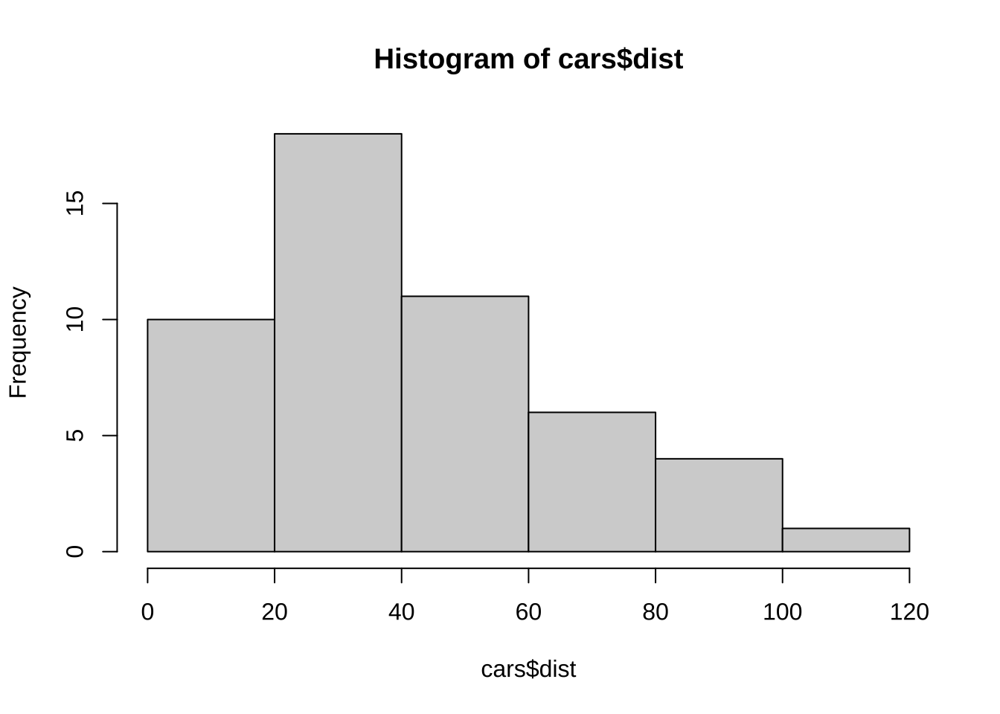
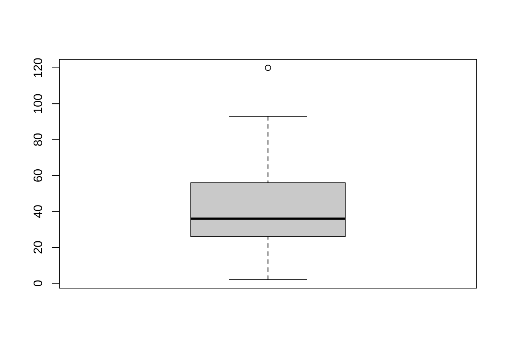
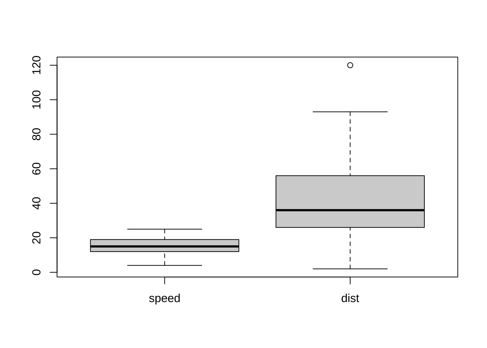
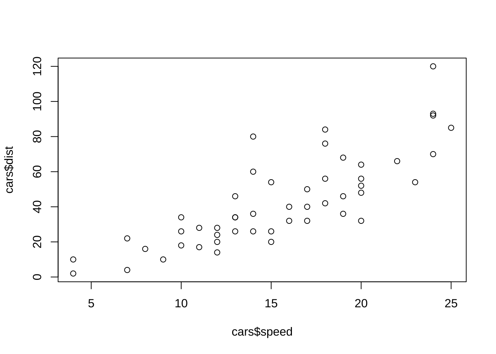
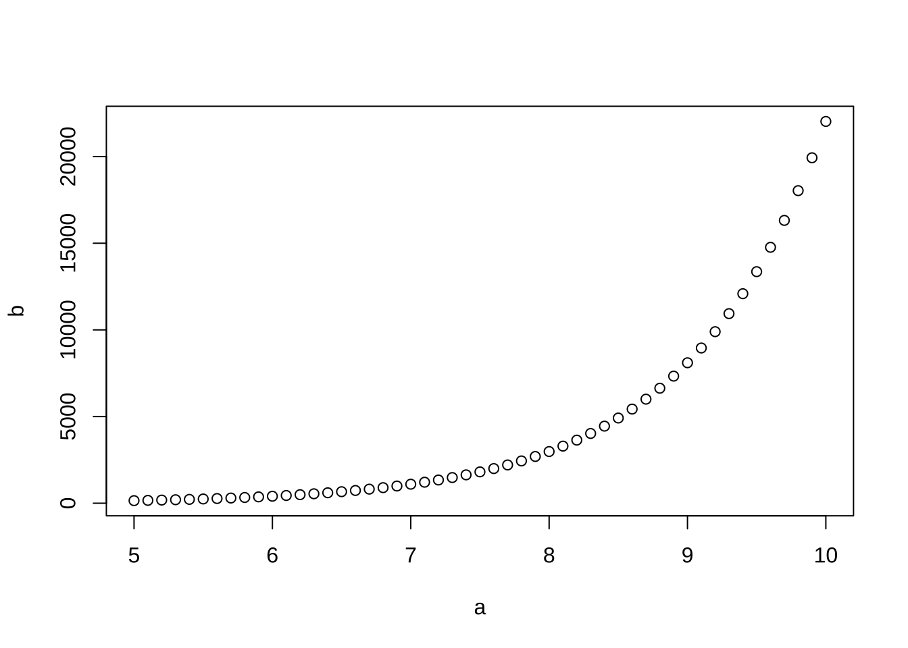

제 3 장 R 기초
3.1 R 의 계산기 기능
간단한 명령을 몇 가지 살펴보자.
## [1] 2## [1] 12## [1] 2.5## [1] 9결과를 보면 알 수 있겠지만 +는 덧셈, -는 뻴셈, *는 곱셈, /는 나눗셈이며 ^은 거듭제곱을 뜻한다.
계산 순서는 수학과 마찬가지로 괄호친 부분, 거듭제곱, 곱셈과 나눗셈, 덧셈과 뺄셈 순서로 왼쪽부터 계산한다.
# 표시가 붙으면 이하의 내용은 주석(comment)으로서 무시한다.
## [1] 2R은 변수(variable)에 값을 할당(assign)할 수 있다 ( = 또는 <-). 아래에서 x, y 등이 변수이다.
변수 이름은 알파벳과 숫자, 그리고 밑줄(_)과 마침표(.)로 지을 수 있으나 첫 글자는 알파벳으로 시작해야 한다.
## [1] 3## [1] 2.732051변수에 저장할 수 있는 값은 숫자뿐만이 아니라 문자열도 저장할 수 있다. 문자열은 따옴표(" ")안에 문자를 넣어 만들 수 있다.
3.2 기본 수학함수
사칙연산 외의 다른 계산들은 함수를 이용한다.
예를 들어 양의 제곱근을 구하려면 sqrt 함수를 쓴다.
그 외에도 자주 쓰이는 함수로 abs, exp, log가 있다. abs는 절대값, exp는 \(e^x\), log는 로그값을 구한다.
## [1] 1.414214## [1] 3## [1] 2.718282## [1] 0.6931472함수에는 기본값으로 설정된 부분들이 있다. 예를 들어 log 함수의 밑은 e가 기본값이다. 다시 말해 자연로그를 구한다. 만약 \(\log_3(2)\)를 구하고 싶다면 다음과 같이 밑을 지정해준다.
## [1] 0.63092983.3 도움말
“?함수이름”과 같은 형식으로 입력하면 함수에 대한 도움말 창이 뜬다. R의 도움말은 매우 자세하고 대부분 예제를 제공하기 때문에 도움말을 읽어보고 예제를 따라해보면 특별한 교재없이도 많은 공부가 된다.
도움말은 Rstudio은 plot 패널에서 help 탭(tab)을 선택하고 찾고자 하는 명령어를 입력하면 그에 대한 도움말을 보여준다.
만약 함수 이름 자체를 모를 때는 help.search 함수를 이용해 도움말을 검색한다.
3.4 벡터
R은 통계용 언어이므로 하나의 값을 다루는 경우보다 여러 개의 값을 한 번에 다뤄야하는 경우가 더 많다. 여러 개의 값을 나타내는 방법에는 벡터(vector), 리스트(list), 행렬(matrix), 데이터프레임(dataframe) 등 다양한 구조의 객체들이 있다.
가장 기본적인 객체로서 여러 개의 자료를 나타내는 구조는 벡터로서 여러 개의 동일한 형식의 값들을 모아놓은 자료의 구조이다. 벡터는 c 함수를 이용해 만든다.
## [1] 1 2 3## [1] 1 2 3 4 5## [1] "Tom" "Jane" "철수" "영희"하나의 값과 벡터를 사칙연산을 하면 하나의 값이 벡터의 각 값에 반복해서 자동적으로 연산을 한다.
## [1] 2 3 4벡터끼리 사칙연산을 하면 두 벡터에서 같은 위치에 있는 값끼리 연산을 한다.
## [1] 5 7 9두 벡터의 길이가 다르면 짧은 쪽을 반복하여 처음부터 다시 적용한다. 아래 첫 번째 예의 경우 1+3, 1+4를 하고 5와 6에는 다시 1과 2를 적용해서 계산을 한다. 긴 벡터의 길이가 짧은 벡터의 길이의 배수인 것이 원칙이지만 그렇지 않더라도 경고(warning)만 뜰 뿐 계산은 된다.
## [1] 4 6 6 8## Warning in c(1, 2, 3) + c(4, 5, 6, 7): longer object length is not a multiple of
## shorter object length## [1] 5 7 9 8위의 결과를 보면 연산을 수행할 때 길이가 다른 벡터를 사용할 때는 원하지 않는 결과가 발생할 수 있으므로 주의가 필요하다.
1,2,3,4..와 같이 순서대로 이어지는 정수열은 “시작:끝”과 같은 형태로 콜론(:)을 이용해서 벡터를 만들 수 있다.
## [1] 1 2 3 4 5## [1] 3 4 5 6 7 8 9콜론 대신 seq 함수를 사용할 수 있다.
seq(끝), seq(시작,끝), seq(시작, 끝, 간격)과 같은 형태로 사용한다.
## [1] 1 2 3 4 5 6 7 8 9 10## [1] 3 4 5 6 7## [1] 0.0 0.1 0.2 0.3 0.4 0.5 0.6 0.7 0.8 0.9 1.0## [1] 10 9 8 7 6 5 4 3 2 1같은 수가 반복되는 벡터를 만들 때는 rep 함수를 사용한다.
rep(값, 회수)라고 하면 값을 회수만큼 반복한다.
rep(벡터, 회수)라고 하면 벡터를 회수만큼 반복한다.
rep(벡터, 벡터)라고 하면 왼쪽 벡터에 있는 값을 오른쪽 벡터에 있는 같은 자리의 회수만큼 반복한다.
length 옵션을 주면 반복해서 해당 길이만큼 되도록 한다.
## [1] 1 1 1 1 1## [1] 1 2 3 1 2 3 1 2 3## [1] 1 2 2 3 3 3## [1] 1 2 3 1 2 3 1 2 3 1당연히 벡터도 변수에 할당할 수 있다.
벡터에서 위치로 한 값을 지정하고 싶으면 “변수이름[위치]”와 같은 표현을 사용한다. 위치는 벡터에 저장된 값들이 순서대로 1부터 시작하여 저장된 값의 개수까지 자연수로 표시된다.
만약 위치가 벡터의 길이를 초과하면 “값 없음(not available)”을 뜻하는 NA 표시가 뜬다.
## [1] "Tom" "Jane" "철수" "영희"## [1] "Tom"## [1] "영희"## [1] NA위치는 하나의 값이 아니라 여러 개의 숫자로 동시에 나타낼 수 있다.
## [1] "Jane" "영희"## [1] 1 2 3 4 5 6 7 8 9 10## [1] 1## [1] 1 2 3 4 5## [1] 2 4 6 8벡터를 만드는 경우 주의할 점은 벡터는 같은 형식의 값들로 구성되어야 한다. 예를 들어 기본적으로 문자열과 숫자로 벡터를 만들 수 없다. 만약 아래와 같이 실수 0.1과 문자열 "Tom" 으로 벡터를 만들면 숫자 0.1234 이 문자열로 자동적으로 변환된다. 이러한 자동 변환은 가끔 편리할 수 있지만 예상하지 않은 결과를 초래할 수 있으므로 주의해야 한다.
## [1] "0.1234" "Tom"3.5 벡터에 대한 함수의 적용
하나의 값에 적용하는 함수를 벡터에 적용하면 사칙 연산의 경우와 마찬가지로 각각의 값에 적용한다.
## [1] 1 2 3 4 5 6 7 8 9 10## [1] 0.0000000 0.6931472 1.0986123 1.3862944 1.6094379 1.7917595 1.9459101
## [8] 2.0794415 2.1972246 2.3025851벡터에 적용할 때 하나의 값을 계산하는 함수도 있다. 아래 mean은 벡터의 평균을 구하는 함수이다.
## [1] 5.5## [1] 3.02765## [1] 55## [1] 1## [1] 10## Min. 1st Qu. Median Mean 3rd Qu. Max.
## 1.00 3.25 5.50 5.50 7.75 10.00위에서 나오는 여러 가지 함수는 벡터의 기초 통계량을 계산하는 함수들이다.
mean: 평균sd: 표준편차(standard deviation)sum: 합계min: 최소값max: 최대값summary: 벡터의 요약 정보 (최소값, 1사분위수, 중앙값, 평균, 3사분위수, 최대값)
3.5.1 데이타프레임
데이타프레임(dataframe)은 여러 벡터들을 하나로 합쳐놓은 자료의 형태를 가진다. 흔히 사용하는 마이트로소프트사의 엑셀(MS Excel)에서 사용하는 스프레드쉬트(spread sheet) 형태를 가지는 자료이다.
데이타프레임을 만드는 방법은 먼저 프레임에 포함될 같은 길이를 가지는 벡터들을 만들고 data.frame함수로 데이타프레임을 만들 수 있다.
## [1] 1 2 3 4 5## [1] "철이" "John" "순이" "Paul" "영희"## [1] 99.66793 110.84859 98.11399 78.60413 88.77826## ID Name Salary
## 1 1 철이 99.66793
## 2 2 John 110.84859
## 3 3 순이 98.11399
## 4 4 Paul 78.60413
## 5 5 영희 88.77826테이타프레임에서 하나의 벡터를 꺼내는 방법은 프레임이름뒤에 $ 를 붙이고 벡터의 변수명을 붙이면 된다.
## [1] "철이" "John" "순이" "Paul" "영희"## [1] 99.66793 110.84859 98.11399 78.60413 88.77826데이타프레임의 자료의 일부를 추출하는 경우 행과 열의 위치를 지정하여 벡터와 유사하게 일부를 나타낼 수 있다. 그 형식은 dataframe[행의 위치, 열의 위치] 로 지정한다.
## [1] 1## [1] "순이"## [1] NA## ID Name Salary
## 3 3 순이 98.11399## [1] 99.66793 110.84859 98.11399 78.60413 88.77826## ID Salary
## 1 1 99.66793
## 2 2 110.84859
## 3 3 98.11399R은 차제가 여러 가지 자료를 포함하고 있으서 자료의 이름을 입력하면 자료를 볼 수 있고 여러 가지 요약 통계를 볼수 있다. 아래에 나오는 cars라는 데이타프레임은 두 개의 벡터 dist와 speed를 포함하는 데이타프레임이다. cars데이타프레임은 자동차 운행시 브레이크를 밟았을 때 속도 speed에 따른 제동거리 dist를 실험으로 구성한 자료이다 (?cars를 이용하여 자료의 정보를 볼 수 있다)
## speed dist
## 1 4 2
## 2 4 10
## 3 7 4
## 4 7 22
## 5 8 16
## 6 9 10
## 7 10 18
## 8 10 26
## 9 10 34
## 10 11 17
## 11 11 28
## 12 12 14
## 13 12 20
## 14 12 24
## 15 12 28
## 16 13 26
## 17 13 34
## 18 13 34
## 19 13 46
## 20 14 26
## 21 14 36
## 22 14 60
## 23 14 80
## 24 15 20
## 25 15 26
## 26 15 54
## 27 16 32
## 28 16 40
## 29 17 32
## 30 17 40
## 31 17 50
## 32 18 42
## 33 18 56
## 34 18 76
## 35 18 84
## 36 19 36
## 37 19 46
## 38 19 68
## 39 20 32
## 40 20 48
## 41 20 52
## 42 20 56
## 43 20 64
## 44 22 66
## 45 23 54
## 46 24 70
## 47 24 92
## 48 24 93
## 49 24 120
## 50 25 85위에서 보았듯이 R은 계산과 분석에 필요한 기능을 함수(function)로 가지고 있으며 함수이름을 치고 괄호안에 필요한 정보를 넣으면 정보를 제공한다. 아래에서 head 함수는 자료의 앞부분만을 보는 기능을 하고 summary 함수는 자료 cars에 있는 변수들의 요약 통계량을 주는 기능을 가진다
## speed dist
## 1 4 2
## 2 4 10
## 3 7 4
## 4 7 22
## 5 8 16
## 6 9 10## speed dist
## Min. : 4.0 Min. : 2.00
## 1st Qu.:12.0 1st Qu.: 26.00
## Median :15.0 Median : 36.00
## Mean :15.4 Mean : 42.98
## 3rd Qu.:19.0 3rd Qu.: 56.00
## Max. :25.0 Max. :120.00## [1] 50 2위에서 함수 dim은 데이타프레임에서 자료의 갯수(50개)와 변수의 개수(2개)를 벡터 형식으로 알려준다.
3.6 간단한 그림 그리기
cars자료에 있는 dist 벡터의 히스토그램과 상자그림은 각각 hist 와 boxplot 함수로 그릴 수 있다.


데이타프레임 전체에 plot함수를 적용하면 데이터프레임안에 있는 모든 변수들의 상자그림을 같이 그려준다.

car자료에 있는 두 변수의 산포도를 보려면 다음과 같은 plot 함수를 이용하면 된다. plot 함수는 두 개의 인자(argument)를 plot(x,y)와 같이 요구하는데 첫 번째 인자는 x축으로 이용할 변수이고 두 번째 인자는 y 축으로 이용할 변수이다.

## [1] 5.0 5.1 5.2 5.3 5.4 5.5 5.6 5.7 5.8 5.9 6.0 6.1 6.2 6.3 6.4
## [16] 6.5 6.6 6.7 6.8 6.9 7.0 7.1 7.2 7.3 7.4 7.5 7.6 7.7 7.8 7.9
## [31] 8.0 8.1 8.2 8.3 8.4 8.5 8.6 8.7 8.8 8.9 9.0 9.1 9.2 9.3 9.4
## [46] 9.5 9.6 9.7 9.8 9.9 10.0## [1] 148.4132 164.0219 181.2722 200.3368 221.4064 244.6919
## [7] 270.4264 298.8674 330.2996 365.0375 403.4288 445.8578
## [13] 492.7490 544.5719 601.8450 665.1416 735.0952 812.4058
## [19] 897.8473 992.2747 1096.6332 1211.9671 1339.4308 1480.2999
## [25] 1635.9844 1808.0424 1998.1959 2208.3480 2440.6020 2697.2823
## [31] 2980.9580 3294.4681 3640.9503 4023.8724 4447.0667 4914.7688
## [37] 5431.6596 6002.9122 6634.2440 7331.9735 8103.0839 8955.2927
## [43] 9897.1291 10938.0192 12088.3807 13359.7268 14764.7816 16317.6072
## [49] 18033.7449 19930.3704 22026.4658